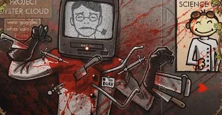
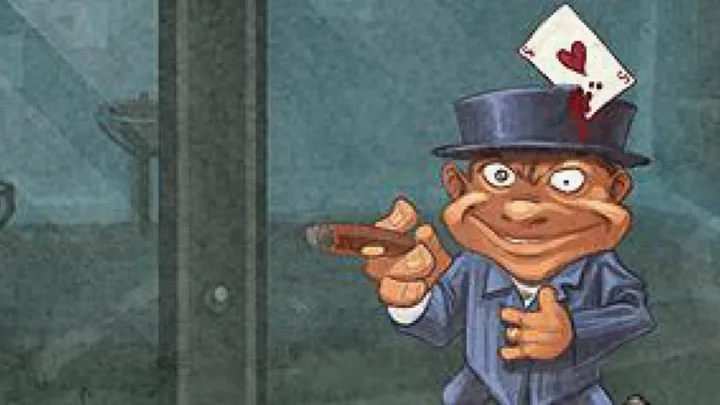

CONTAINMENT FILE: MAD HATTER
“Sanity is a borrowed concept. I returned mine late.”
Currently held in royal detention. Subject exhibits unstable temporal cognition, fragmented speech loops, and recurring tea-party hallucination cycles.
